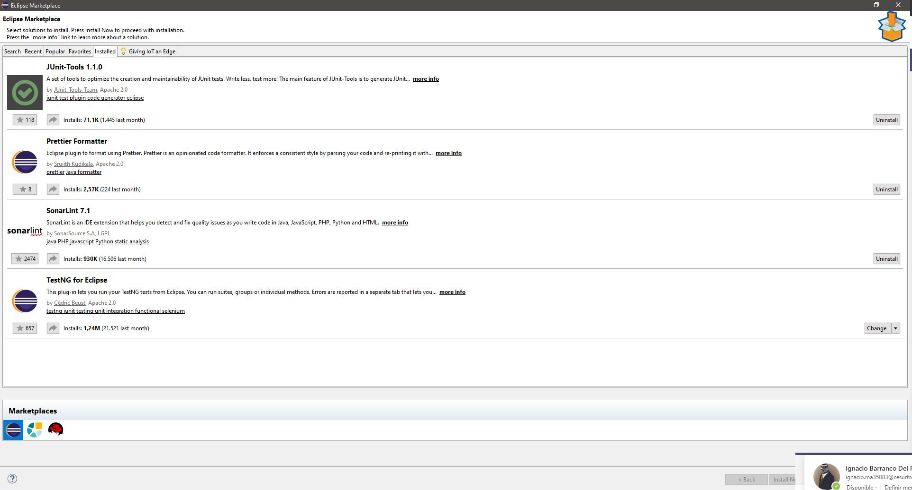
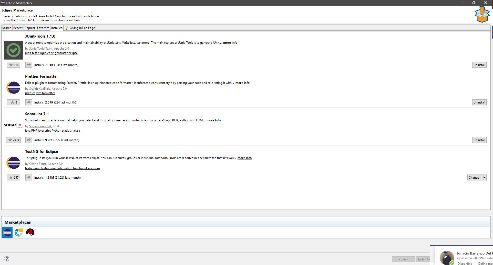
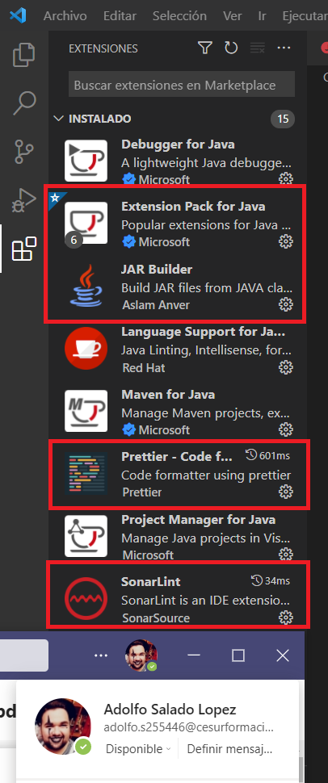
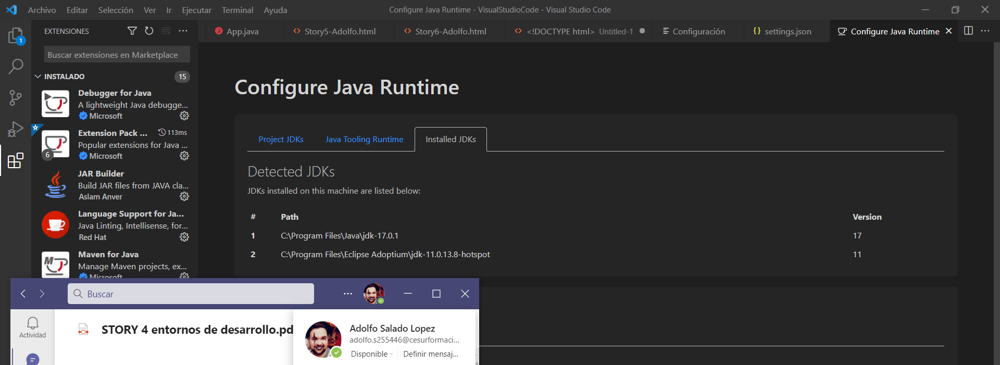
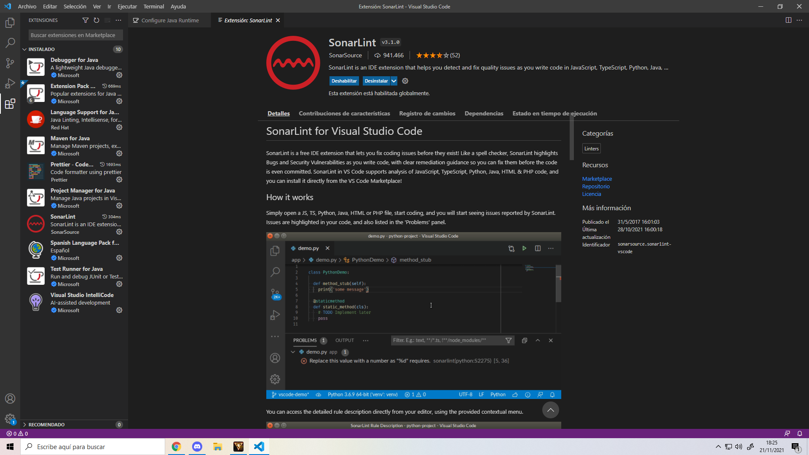
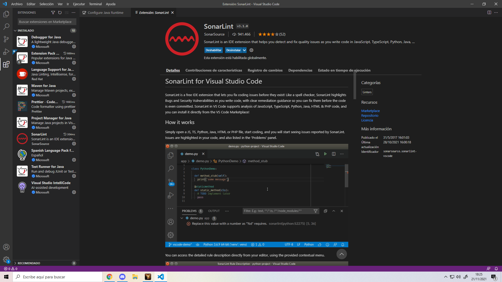
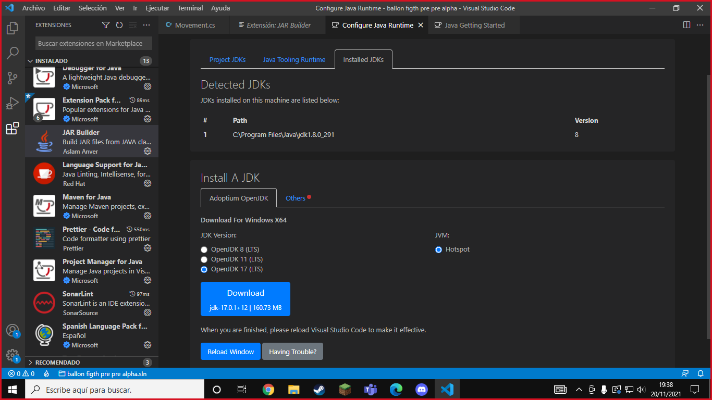
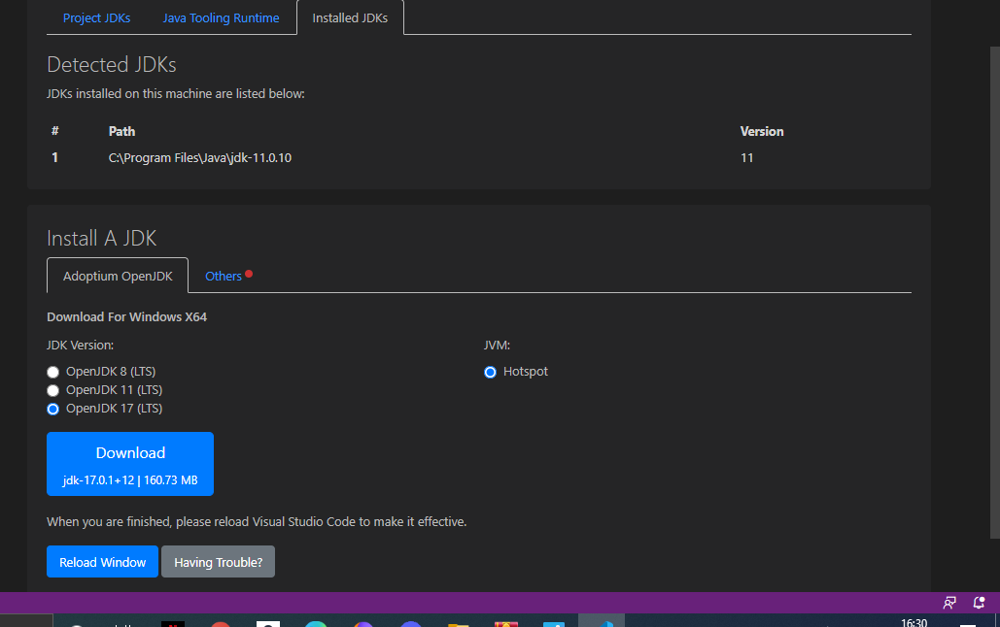
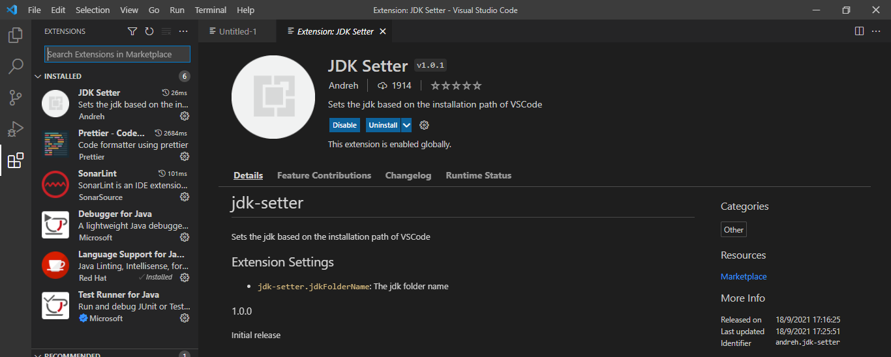

Se añaden las extensiones dependiendo de que entorno de desarrollo tengas:
Si tienes eclipse te tienes que meter en la parte de arriba y darle a "Help"
Despues te metes en la pestaña de "eclipse marketplace" y hay pones el nombre de todas las expansiones
Si estas en Visual Studio pones en la parte de la izquierda en la parte que pone encima "Expanciones"
Hay pones el nombre de todas las expansiones y las instalas
Despues de esto tienes que configurar JDK para tu entorno cambiando algunas cosas del sistema
Ahora vamos a proceder a enseñar las imagenes de las extensiones instaladas en el entorno de desarrollo y la configuración del JDK
SonarLint, Junit-Tools, TestNG for Eclipse, Prettier
 

Extension Pack for Java, Prettier, SonarLint
 Extension Pack for Java, Prettier, SonarLint


Extension Pack for Java, Prettier, SonarLint

SonarLint, Junit-Tools, TestNG for Eclipse, Prettier
 

Extension Pack for Java, Prettier, SonarLint
Extension Pack for Java, Prettier, SonarLint
 